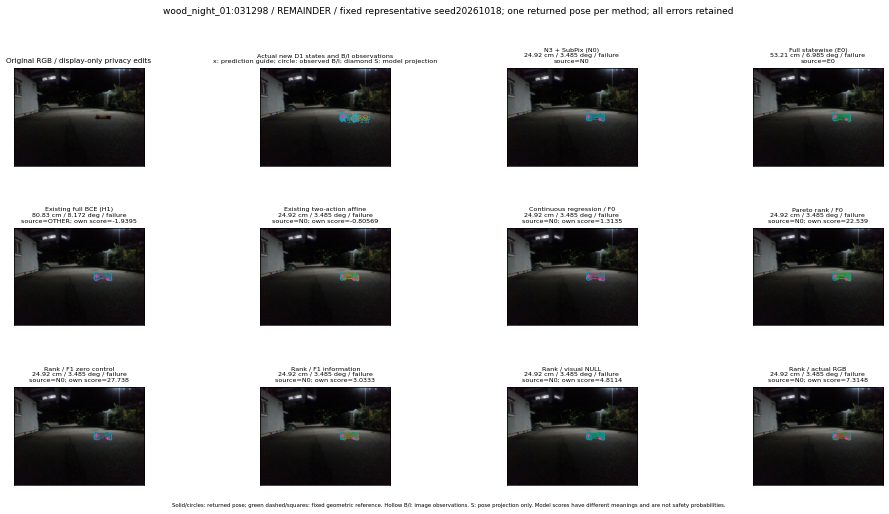

실선은 반환 자세, 초록 점선은 고정 기하 참조입니다. S는 영상 관측이 아닙니다. 점수는 모델별 의미가 다르며 보정된 안전 확률이 아닙니다. 개인정보 처리는 표시 사본에만 적용했습니다.
| 방법·seed | 위치 / 회전 / 공동성공 | 실제 출처 | 선택 후보 | 각 모델 자체 점수 |
|---|---|---|---|---|
| N0 | 24.92 cm / 3.485 deg / failure | N0 | N/A | N/A |
| E0 | 53.21 cm / 6.985 deg / failure | E0 | N/A | N/A |
| E0_REGENERATED | 53.21 cm / 6.985 deg / failure | E0 | E0_REGENERATED | N/A |
| POSEFIX_SUBPIX_PF_ANCHOR | 25.22 cm / 3.668 deg / failure | OTHER | N/A | N/A |
| POSEFIX_SUBPIX_YOLO_ANCHOR | 25.22 cm / 3.668 deg / failure | OTHER | N/A | N/A |
| D1_H1_MLP_s20261018 | 80.83 cm / 8.172 deg / failure | OTHER | WD0/ORIGINAL_WD/selected | -1.9395159482955933 |
| D1_H1_MLP_s20261019 | 80.83 cm / 8.172 deg / failure | OTHER | WD0/ORIGINAL_WD/selected | -2.1377246379852295 |
| D1_H1_MLP_s20261020 | 80.83 cm / 8.172 deg / failure | OTHER | WD0/ORIGINAL_WD/selected | -1.8182713985443115 |
| D1_H1_PAIR_MLP_s20261018 | 24.92 cm / 3.485 deg / failure | N0 | N0 | -2.0799942016601562 |
| D1_H1_PAIR_MLP_s20261019 | 24.92 cm / 3.485 deg / failure | N0 | N0 | -1.7458438873291016 |
| D1_H1_PAIR_MLP_s20261020 | 24.92 cm / 3.485 deg / failure | N0 | N0 | -1.9353957176208496 |
| D1_H1_PAIR_ROLE_AFFINE_s20261018 | 24.92 cm / 3.485 deg / failure | N0 | N0 | -0.8056913614273071 |
| D1_H1_PAIR_ROLE_AFFINE_s20261019 | 24.92 cm / 3.485 deg / failure | N0 | N0 | -0.987483561038971 |
| D1_H1_PAIR_ROLE_AFFINE_s20261020 | 24.92 cm / 3.485 deg / failure | N0 | N0 | -0.9672936797142029 |
| R_CONT_F0_s20261018 | 24.92 cm / 3.485 deg / failure | N0 | N0 | 1.3134835958480835 |
| R_CONT_F0_s20261019 | 24.92 cm / 3.485 deg / failure | N0 | N0 | 1.4655660390853882 |
| R_CONT_F0_s20261020 | 24.92 cm / 3.485 deg / failure | N0 | N0 | 1.3389028310775757 |
| R_ORDER_F0_s20261018 | 24.92 cm / 3.485 deg / failure | N0 | N0 | 22.53938102722168 |
| R_ORDER_F0_s20261019 | 24.92 cm / 3.485 deg / failure | N0 | N0 | 16.94495964050293 |
| R_ORDER_F0_s20261020 | 24.92 cm / 3.485 deg / failure | N0 | N0 | -5.461966514587402 |
| R_ORDER_F1_ZERO_s20261018 | 24.92 cm / 3.485 deg / failure | N0 | N0 | 27.738313674926758 |
| R_ORDER_F1_ZERO_s20261019 | 24.92 cm / 3.485 deg / failure | N0 | N0 | 30.55596351623535 |
| R_ORDER_F1_ZERO_s20261020 | 24.92 cm / 3.485 deg / failure | N0 | N0 | 20.04486083984375 |
| R_ORDER_F1_s20261018 | 24.92 cm / 3.485 deg / failure | N0 | N0 | 3.0333187580108643 |
| R_ORDER_F1_s20261019 | 24.92 cm / 3.485 deg / failure | N0 | N0 | 6.339430809020996 |
| R_ORDER_F1_s20261020 | 24.92 cm / 3.485 deg / failure | N0 | N0 | 4.258873462677002 |
| V_ORDER_NULL_s20261018 | 24.92 cm / 3.485 deg / failure | N0 | N0 | 4.811428070068359 |
| V_ORDER_NULL_s20261019 | 24.92 cm / 3.485 deg / failure | N0 | N0 | 2.6817026138305664 |
| V_ORDER_NULL_s20261020 | 24.92 cm / 3.485 deg / failure | N0 | N0 | 8.502111434936523 |
| V_ORDER_RGB_s20261018 | 24.92 cm / 3.485 deg / failure | N0 | N0 | 7.3148040771484375 |
| V_ORDER_RGB_s20261019 | 24.92 cm / 3.485 deg / failure | N0 | N0 | 2.728945016860962 |
| V_ORDER_RGB_s20261020 | 24.92 cm / 3.485 deg / failure | N0 | N0 | -2.5624234676361084 |